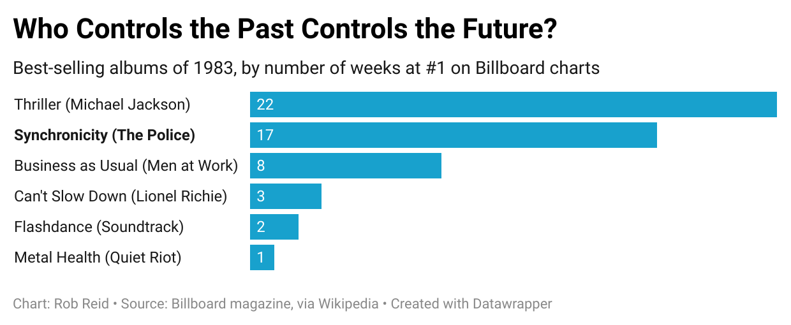
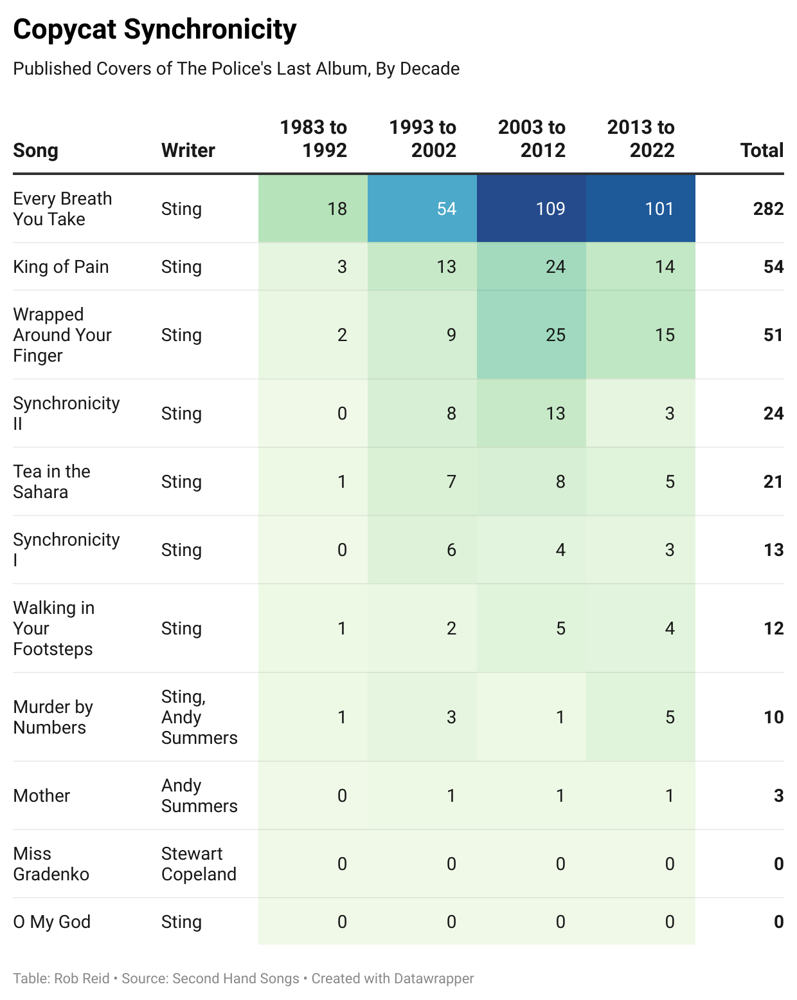

Still Shouting above the Din of Our Rice KrispiesThe Staying Power of Synchronicity after Four Decades
Not long after Michael Jackson's Thriller began its ascent to selling an all-time record 70 million albums following its release in late 1982, the English power trio The Police twice interrupted Jackson's reign at the top of the charts with their genre-bending Synchronicity. Bolstered by a swarm of hits including Every Breath You Take, Synchronicity II, King of Pain, and Wrapped Around Your Finger, The Police held their own in direct competition with Jackson hits such as Billie Jean, Beat It, and Human Nature. 1983 opened under the reign of Business as Usual by Men at Work, and ex-Commodore Lionel Richie saw success in December, but Thriller and Synchronicity dominated the charts for most of the year.  Behind the scenes, The Police were dysfunctional. something about recording separately. that record would be their last [substantiate this with my reading] Sting cast out on his own, etc. Though he's promoting his work for 4 decades. put in some real substantive detail about inner conflicts! Forty years later, The Police are not forgotten. Sting's proclivity towards philosophy and literary references helped anchor the band's place in history. Wrapped Around Your Finger referenced timeless works of Faust and Greek mythology, while Synchronicity II describes suburban commuters "packed like lemmings into shiny metal boxes" much as they are today.
But in the 40 years following Synchronicity, The Police never recorded a followup record. Sting and Stewart Copeland are now in their 70s, Andy Summers recently turned 80, and the band's aging fan base is gradually getting plucked away by the Grim Reaper. The three artists remain active in their solo work. But Synchronicity has largely been sustained by deeply engaged fans.
Some of the most devoted Police followers have published a plethora of covers over the years. Data acquired from Second Hand Songs, a database of officially published cover tunes, shows Synchronicity in the shadow of the Michael Jackson's Thriller, but well beyond its other popular peers from the class of 1983.
Every Breath You Take has been a runaway favorite cover. But tribute bands have breathed new life into some of the more experimental tracks. Tea in the Sahara, for instance, charted well only in Poland at the time of its release, but Second Hand Songs tracks 21 published covers in the four decades since.

In February of this year, the U.S. Library of Congress helped cement Synchronicity's place in history by placing it in the National Recording Registry for being "culturally, historically, or aesthetically significant."
And then in June, the instrumental trio Hazelrigg Brothers published a cover of Synchronicity in its entirety. Notably this recording includes a take of Miss Gradenko, a Stewart-Copeland-penned track that hadn't yet been covered in the Second Hand Songs database.
Data analysis by Rob Reid. For a technical background on this story, see my GitHub repository.
|